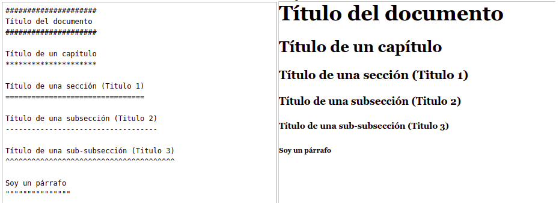

Mini tutorial de reStructuredText
Esta guía es una breve introducción a los conceptos y la sintaxis de reStructuredText (reST).
reStructuredText es un lenguaje de marcado de texto, que es legible y simple de usar, pero lo suficientemente potente para un uso no trivial. Es útil para la documentación de programas en línea (como los docstrings de Python), para crear rápidamente páginas web simples y para documentos independientes.
Nota
Para seguir este tutorial te puedes ayudar de alguna herramienta para editar y previsualizar el resultado de la sintaxis RST. Lo puedes hacer online en este sitio.
Contenidos
Párrafo
El párrafo es el bloque más básico en un documento reST. Los párrafos son simplemente trozos de texto separados por una o más líneas en blanco. Al igual que en Python, la sangría es significativa en reST, por lo que todas las líneas del mismo párrafo deben alinearse a la izquierda con el mismo nivel de sangría.
Este es un párrafo.
Resultado
Este es un párrafo
Los párrafos se alinean al borde izquierdo y normalmente están separados por líneas en blanco.
Resultado
Los párrafos se alinean al borde izquierdo y normalmente están separados por líneas en blanco.
Formato de texto en línea
El formato de texto en línea permite que las palabras y frases dentro del texto tengan estilos de caracteres (como cursiva y negrita) y funcionalidad (como hipervínculos).
Texto Plano |
Resultado |
|---|---|
|
itálica |
|
negrita |
|
|
|
Bloques de texto
Es posible mostrar bloques de texto.
Para esto se debe poner :: al final del párrafo para obtener algo como esto:
Cualquier sangría o tabulación es parte del bloque preformateado. Incluso los saltos de línea y espacios.
Links o enlaces
Si vas a usar un link en varias partes de un documento, puedes definir el URL por separado:
Línea donde aparece el link_ definido por separado. .. _link: https://url-link/defino/por/separadp
Rst nos da la facilidad de crear enlaces internos hacia el un documento. Para hacer esto podemos basarnos en el nombre de los encabezados que estén dentro de un archivo o documento, como por ejemplo este enlace Párrafo me posiciona al inicio de este documento:
por ejemplo este enlace :ref:`Párrafo <parrafo>` me posiciona al inicio de este documento:
Listas
Listas desordenadas
- Elemento 1 - Elemento 2 * Elemento 3 + Elemento 4
Resultado
Elemento 1
- Elemento 2
- Elemento 3
Elemento 4
Lista ordenada
#. Elemento 1 #. Elemento 2 #. Elemento 3
Resultado
Elemento 1
Elemento 2
Elemento 3
Títulos o encabezados
Los encabezados se crean subrayando el texto del encabezado con algún caracter, este subrayado debe ser al menos tan largo como el texto.
La jerarquía de encabezados es dada por el orden, no por los caracteres. Podemos seguir la guía de estilo de documentación de Python que sigue esta convención para los títulos de encabezados.
Subrayar con ``#``, para encabezado de partes.
Subrayar con ``*``, para encabezado de capítulos.
Subrayar con ``=``, para encabezado de secciones (Título 1).
Subrayar con ``-``, para encabezado de sub secciones (Título 2).
Subrayar con ``^``, para encabezado de sub sub secciones (Título 3).
subrayar con ``"``, para los párrafos.
Aquí la sintaxis de ejemplo:
##################### Título del documento ##################### Título de un capítulo ********************* Título de una sección (Titulo 1) ================================ Título de una subsección (Titulo 2) ----------------------------------- Título de una sub-subsección (Titulo 3) ^^^^^^^^^^^^^^^^^^^^^^^^^^^^^^^^^^^^^^^ Soy un párrafo """"""""""""""
Resultado
Bloques de código
En los bloques de código puedes agregar y mostrar código de cualquier lenguaje soportado:
.. code-block:: python
import os
print('Hellow World!')
print(help(os))
Resultado
import os print('Hellow World!') print(help(os))
Imágenes
Puedes añadir imágenes, usando la siguiente sintaxis:
.. image:: screenshots/archivo-imagen.png :height: 100 :width: 200 :alt: alternate text
Tablas
.. csv-table:: :header: "Uno", "Dos", "Tres" "Fila uno", "Fila dos", "Fila tres" "Fila uno", "Fila dos", "Fila tres"
Resultado
Uno |
Dos |
Tres |
|---|---|---|
Fila uno |
Fila dos |
Fila tres |
Fila uno |
Fila dos |
Fila tres |